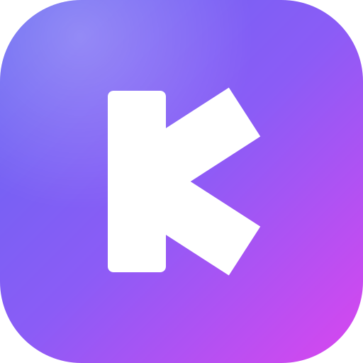
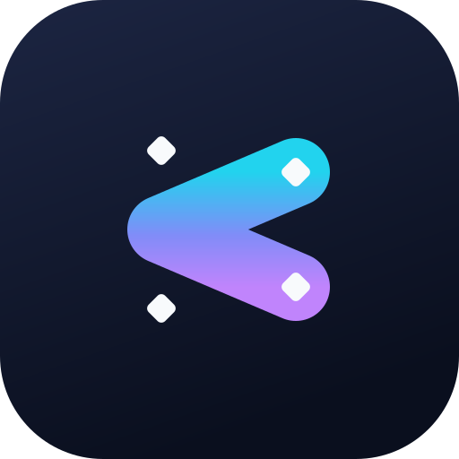
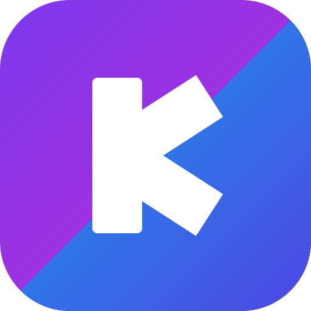

靛蓝→紫→品红 135° 渐变圆角方块，白色几何 K：竖笔微圆角、斜笔末端按笔画方向斜切，光线从左上角漫入。最稳的方向，工具感强，任何尺寸都清晰。

深夜蓝底上，青→靛→紫渐变的圆头 K 笔画，四个端点带白色菱形锚点——像画布里被选中的一条向量线，呼应 Design 模式的画布创作基因。科技感最强。

对角线把图标分成两半：左上紫品红代表 Design 画布，右下天蓝→靛蓝代表 Code 终端，白色 K 横跨两侧。把「双模式工作台」直接画进 logo 里，叙事最强。

apps/web/public/logo.svg 与 favicon.svg（侧栏 / 标题栏 / 加载页自动跟随），并同步生成 Tauri 桌面端各尺寸应用图标。